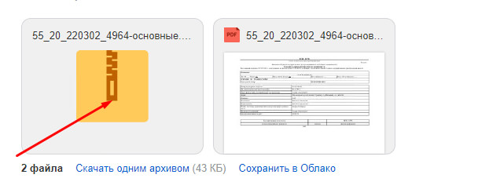

Публичная оферта
1. Общие положения
1. Настоящий публичный договор (далее Договор, договор) представляет собой официальное предложение сайта, принадлежащего компании "rossegrn.info", далее именуемого «Исполнитель», направленное на оказание информационных услуг юридическому или дееспособному физическому лицу на условиях, изложенных в настоящем договоре.
2. В соответствии с пунктом 2 статьи 437 Гражданского кодекса Российской Федерации (далее по тексту – ГК РФ) данный документ является публичным Договором (в части условий оказания услуг), а принятие изложенных ниже условий, регистрация на сайте и оплата услуг Исполнителя - акцептом Оферты. В соответствии с пунктом 3 статьи 438 ГК РФ акцепт Оферты равносилен заключению договора на условиях, изложенных в Оферте.
3. При толковании условий настоящего публичного договора принимается во внимание буквальное значение содержащихся в нем слов и выражений. Буквальное значение условия договора в случае его неясности устанавливается путем сопоставления с другими условиями и смыслом договора в целом. Если правила не позволяют определить содержание договора, до заключения настоящего договора сторонами должна быть выяснена действительная общая воля сторон с учетом цели договора. При этом принимаются во внимание все соответствующие обстоятельства, включая предшествующие договору переговоры и переписку, практику, установившуюся во взаимных отношениях сторон, обычаи, последующее поведение сторон. В случае акцепта оферты и оплаты услуг все условия настоящего договора считаются согласованными сторонами.
2. Определения и термины
1. В целях настоящей Оферты нижеприведенные термины используются в следующем значении:
- — Оферта – предложение заключить настоящий публичный договор на оказание информационных услуг.
- — Сайт – интернет-сайт https://rossegrn.info, используемый Исполнителем для оказания услуг.
- — ЕГРН — Единый государственный реестр недвижимости.
- — Росреестр — Федеральная служба государственной регистрации, кадастра и картографии.
- — Информационные услуги — услуги Исполнителя по предоставлению Заказчику информации, содержащейся в Реестрах, в виде официальных электронных документов, выданных Росреестром.
- - Аналитические услуги - услуги Исполнителя по предоставлению Заказчику информации, построенной на основании данных, полученных сервисом из официальных или иных открытых источников.
- — Акцепт Оферты — полное и безоговорочное принятие Оферты путем осуществления действий, указанных в п. 9.1. Согласия.
- — Заказчик — лицо, осуществившее Aкцeпт Оферты и являющееся заказчиком Информационных услуг на условиях заключаемого публичного договора.
- — Договор на оказание информационных услуг (далее – Договор) – договор между Заказчиком и Исполнителем на предоставление Информационных услуг, который заключается посредством Акцепта Оферты.
3. Предмет договора
1. Предметом настоящего договора является возмездное оказание Заказчику Информационных услуг Исполнителем в соответствии с условиями настоящего договора.
4. Условия оказания услуг
1. Исполнитель оказывает заказчику услугу по получению и первичной обработке запрашиваемой заказчиком информации из государственного реестра в виде документа (документов) в формате, оределяемом заказчиком (в т.ч. с применением электронной подписи), в соответствии с деталями запроса, указанными Заказчиком при заполнении запроса (адрес объекта, вид документа, кадастровый номер), в форме отправки ссылки на файл на e-mail, указанный Заказчиком или в иных формах, которые позволяют однозначно определить, что заказчик получил запрошенную информацию. При этом Исполнитель не отвечает за полную или временную неработоспособность телематических сервисов Заказчика, связанных с Услугой, и не может гарантировать 100% работоспособность указанных сервисов при оказании услуги и направлении ее результатов в адрес Заказчика.
2. Услуга, предусмотренная п. 4.1 настоящей оферты, оказывается в срок, не более чем 7 рабочих дней, исчисляемых с момента акцепта оферты в порядке, предусмотренном пунктом 9.1 настоящего договора.
3. Исполнитель дополнительно по запросу Заказчика оказывает ему Аналитические услугу по обработке первичной информации, полученной Заказчиком в результате выполнения Услуги 4.1 и предоставляет результат оказания такой услуги в виде аналитического документа (документов) в формате справки, содержащей предположительные выводы, основанные на анализе полученной информации с применением методов математического и статистического моделирования. Исполнитель оставляет за собой право определить используемые модели для оказания услуг. Информация и выводы, полученные на основании обработки первичной информации носят вероятностный характер и не могут быть абсолютно верными. Процент допустимой погрешности выводов соответствует или более погрешности математической или статистической модели построения итогов.
4. Исполнитель считается исполнившим свои обязательства с момента направления запрашиваемой информации Заказчику, при этом не имеет значения дата получения указанной информации Заказчиком, а также понимание (или его отсутствие) в отношении предоставленной аналитической информации.
5. Полный перечень предоставляемых информационных услуг определяется их подробным описанием, представленным на соответствующей странице Сайта. В случае, если какая-то информация несет в себе разночтения, содержит элементы неопределенности или иным образом может быть трактована двояко, сторона обязана воздержаться от заказа такой услуги до момента получения разъяснения от Исполнителя. Если сторона воспользуется услугой до получения разъяснений, то Заказчик и Исполнитель считают, что стороны получили полную информацию относительно услуги и не вправе ссылаться на то, что услуга оказана некорректно (некачественно).
5. Права и обязанности исполнителя
1. Исполнитель вправе самостоятельно определять способы выполнения задания Клиента, используемую математическую, статистическую или иные формы моделирования или прогнозирования результатов, самостоятельно организовывать всю работу по исполнению настоящего договора, определять непосредственных исполнителей и распределять между ними обязанности. Исполнитель имеет право привлекать к выполнению Заказа третьих лиц при условии, что это не влияет на результат оказания Услуги. Исполнитель имеет право использовать для работы любые не запрещенные законодательством РФ источники информации (в т.ч. закрытые источники информации с ограниченным доступом сторонних потребителей) для исполнения настоящего договора.
2. Исполнитель вправе пользоваться услугами любых физических и юридических лиц в целях своевременного и качественного исполнения обязательств по договору. Привлечение к выполнению Услуг третьих лиц, в т.ч. в тот момент, когда услуга уже оказывается, не требует дополнительного согласования с Заказчиком.
3. Исполнитель вправе требовать и получать от Заказчика документы и информацию, необходимые для выполнения поручения, в том числе в ходе исполнения Задания. При предоставлении Заказчиком недостоверной информации, которая необходима для оказания услуги, оплаченная услуга считается оказанной независимо от полученного результата. В случае отказа от предоставлении информации не по вине Заказчика, Исполнитель возвращает денежные средства за услугу за вычетом фактически понесенных расходов на услуги, уже оказанные Заказчику. При направлении запроса на получение дополнительных документов срок, определенный п. 4.2 настоящей Оферты продлевается на срок, необходимый Заказчику на предоставление указанных документов.
4. Исполнитель обязуется оказать услуги, предусмотренные п.3.1. настоящего договора с соблюдением интересов Заказчику добросовестно, качественно и в пределах срока, который является разумным.
5. Исполнитель гарантирует, что представленные ему сведения не будут им использованы во вред интересам Заказчика или переданы третьим лицам иначе, чем для исполнения поставленной перед ним задачи.
6. Права и обязанности заказчика
1. Заказчик обязан оплатить услуги исполнителя в порядке, указанном при заказе запрашиваемой информации.
2. Заказчик обязан предоставить Исполнителю полную и достоверную информацию, необходимую для исполнения настоящего договора.
3. Заказчик имеет право требовать у Исполнителя сведения о ходе исполнения договора.
7. Ответственность сторон
1. За неисполнение или ненадлежащее исполнение условий настоящего договора Стороны несут ответственность в соответствии с действующим законодательством Российской Федерации и условиями настоящего договора.
2. Исполнитель не несет ответственности за недостоверность, неполноту, содержание информации, предоставленной органом кадастрового учета, указанном в ст. 3 Федерального закона «О государственном кадастре недвижимости» № 221-ФЗ от 24.07.2007 года.
3. Стороны не несут ответственность за неисполнение условий настоящего договора, если такое неисполнение явилось следствием наступления обстоятельств непреодолимой силы, предусмотреть и/или предотвратить которые разумными мерами не могла ни одна из Сторон.
4. Бремя доказывания убытков лежит на потерпевшей Стороне.
5. В случае предоставления аналитической информации на основании полученной выписки из ЕГРН или иной, предоставленной Заказчиком информации, Заказчик считается уведомленным, что все предоставленные ему аналитические рекомендации носят исключительно вероятностный характер, полученный на основании анализа большого объема однотипных данных, и степень наступления последствий или наличия указанных проблем не носят 100% вероятности их наступления, а также не могут являться основанием для предъявления к Исполнителю материальных или иных требований, связанных с принятыми на основании этих данных решений, в т.ч. требующих оказания любых дополнительных услуг.
6. Стороны согласовали, что на основании положения ст. 400 ГК РФ максимальный размер всей ответственности за нарушение условий настоящего договора не может превышать стоимость услуги, по которой одна из сторон требует компенсировать ей неустойку. Стороны согласовали тот факт, что максимальный размер неустойки, определенный настоящей статьей, включает в себя все пени, штрафы, неустойки и убытки, которые могут быть заявлены стороной для компенсации.
8. Стоимость услуг и порядок оплаты
1. Стоимость Информационных услуг, оказываемых Исполнителем, без учета комиссии платежной системы, в зависимости от заказанного документа, определяется на основании утвержденного прайс-листа, опубликованного на сайте https://rossegrn.info/price. Исполнитель самостоятельно определяет ценовую политику и вносит сответствующие изменения в прайс-лист, при этом стоимость оказываемой услуги определяется на момент совершения заказа и является неизменной до момента оказания услуги в полном объеме.
2. Все расчеты по Договору производятся в рублях РФ.
3. Оплата Информационных услуг, оказываемых Исполнителем, производится в виде предварительной оплаты в размере 100% стоимости с использованием банковских карт, безналичных платежей или иных форм расчетов, допустимых на территории РФ.
4. Заказчик не вправе запросить у Исполнителя возврат оплаты в случае отсутствия в Реестрах запрашиваемых сведений, поскольку получение отказа является, в том числе, результатом оказания услуги. В случае наличия аванса, возврат переведенных в качестве аванса средств производится в срок до 30 рабочих дней тем же способом, что и было осуществлено пополнение счета.
9. Акцепт оферты и заключение публичного договора
1. Заказчик производит Акцепт Оферты путем оплаты Информационных услуг, в отношении которых заключается сделка, в течение срока для Акцепта с учетом условий гл. 8, 9 настоящего договора.
2. Срок для Акцепта составляет 1 (один) рабочий день с момента выставления для оплаты суммы, указанной в пункте 8.3 настоящего договора, на оплату Информационных услуг.
3. В случае если Заказчик произвел Акцепт Оферты в срок, превышающий указанный в п. 9.2. Оферты, Исполнитель имеет право, по своему усмотрению, принять такой Акцепт и приступить к оказанию Информационных услуг, либо отказаться от принятия такого Акцепта, возвратив Заказчику сумму предоплаты.
4. Стороны оставляют за собой право подписать настоящий договора, скрепив его подписями и печатями сторон, при этом все условия, указанные в настоящем договоре, приобретают условия индивидуально согласованных (утрата публичности договора). В указанном в настоящем пункте случае датой заключения договора будет являться дата подписания договора второй стороной, при этом стороны согласовали, что договор может быть подписан, в т.ч., в электронной форме с использованием средств электроннйо подписи.
10. Срок действия и изменение условий оферты
1. Настоящий договор вступает в силу с момента опубликования на Сайте по адресу https://rossegrn.info/oferta и действует до момента отзыва Исполнителем.
2. Исполнитель оставляет за собой право внести изменения в условия Договора и/или отозвать Оферту в любой момент по своему усмотрению. В случае внесения Исполнителем изменений в Договор, такие изменения вступают в силу с момента опубликования на Сайте, если иной срок вступления изменений в силу не определен дополнительно при их публикации.
3. В случае подписания настоящего договора сторонами на бумажном носителе, изменения, определенные пунктом 10.1 и 10.2 становятся обязательными для сторон по истечение 10 дней после направления Исполнителем в адрес Заказчика соответствующего уведомления по электронной почте и заказным письмом при отсутствии возражений со стороны Заказчика или его молчания. В случае, если после направления уведомления Заказчик продолжает пользоваться услугами сервиса на новых условиях, изменения считаются согласованными сторонами и стороны не могут ссылаться на незаключенность договора и внесенных в него изменений.
4. Исполнитель вправе на свое личное усмотрение проводить различные акции, как разовые, так и длящиеся, стимулировать Заказчика иным способом пользоваться Информационными услугами на более выгодных условиях, чем предусмотрено настоящей Офертой и согласованными расценками.
В ЕГРН проводятся технические работы. Выписки выдаются с задержкой более 24 часов.
чтобы получить выписки.
{kind=link}
Об объекте недвижимости
Основные данные, информация о наличии обременений,ФИО владельца, если есть
образец

О переходе прав
История собственников (если есть) по сделкам,совершенным с 1998 года
образец
Пришлем выписку вам на электронную почту. Обычное время выполнения
запроса — от
5 минут до 48 часов. Если не получите выписку, вернем деньги.

Цена зависит от количества заказанных вписок
Вопросы и ответы
Сроки зависят от загруженности сайта и количества обрабатываемых заявок. Если выписка не получена, то это значит, что запрос не был обработан Росреестром. Максимальный срок обработки запроса составляет три дня (согласно п.9 ст. 62 закона No 218-ФЗ). Если выписка не будет получена по окончание срока, то деньги вернутся.
Проверьте почту, не забудьте про папку "Спам" и "Рассылки". Возможно, почтовый сервис ошибочно определил письмо в неподходящую категорию. Так как файлы в больших количествах отправляются ежедневно, вероятность не заметить письмо и не прочесть велика. С помощью нашего сервиса вы можете самостоятельно следить за заказом и степенью его готовности после обработки Росреестром. Чтобы получить выписку, выберите "Мои заказы" (кнопка находится в панели меню).

(Если сведений о собственнике в ЕГРН нет, то в графе «Особые отметки»
указывается
«Сведения, необходимы для заполнения раздела 2
отсутствуют»)
Вся информация, находящаяся в выписке, берется из актуальной на данный момент базы Росреестра. В системе есть данные только по сделкам, заключённым до наступления 1998. При этом информация доступна исключительно о приватизированных объектах, находящихся в распоряжении законных владельцев.
Наиболее частые ситуации, которые способствуют отсутствию информации о правообладателях: 1. Отсутствует регистрация прав владельца.
В основном, препятствием служит то, что владелец не думал о необходимости регистрации своих прав на имущество в Росреестре. Рассмотрим следующую ситуацию. Человек получает от государства земельный участок, становится членом некоммерческого садового товарищества. У него есть документы, подтверждающие право на недвижимость (свидетельство или членская книжка НСТ). Человек наивно полагает, что собственность находится в его законном владении. Только вот в документах госреестра он не укажется как собственник, хотя имущество действительно будет находиться на официальном кадастровом учёте.
2. Новые действия с объектом не предпринимались с 31 января 1998 года.
Так как в базе находятся лишь зарегистрированные после окончания 1998 года данные, то вся нужная информация, касающаяся собственников, до 1998 года запрашивается в Бюро технической инвентаризации, Департаменте городского имущества или в Департаменте жилищной политики и жилищного фонда.
3. Выписка на коммунальную квартиру.
Несмотря на то, что каждому собственнику принадлежит та или иная часть квартиры, она, являясь объектом недвижимости, не сможет содержать записи о владельце. Поэтому производить заказ выписок следует для каждой комнаты отдельно.
4. Недавно оформленные права на недвижимость.
Чтобы база ЕГРН обновилась, требуется время, поэтому произведенные две-три недели назад сделки могут не отображаться. Это происходит из-за того, что местные офисы Росреестра сначала передают данные в Москву. Следовательно, данные и информация появляется в онлайн-базе ЕГРН немного позже.
5. Наследство.
Подразумевается, что в выписке правообладатели не указаны или указаны, но неверно. Произойти это может по многим причинам. Рассмотрим несколько из них. Во-первых, собственник мог законно приватизировать жилплощадь прежде, чем наступил 1998 год. Затем, должной регистрации прав не последовало. Спустя время квартира переходит кому-либо в качестве наследства. Новый владелец тоже не регистрирует собственность. Несмотря на то, что он имеет все основания на получение наследства, в выписке не укажут ни одного владельца. Во-вторых, в необходимом документе может присутствовать исключительно предыдущий владелец. Здесь он смог зарегистрировать имущество в Росреестре, но вот его наследник этого не сделал. В такой ситуации в нужной выписке отобразится только предыдущий владелец.
6. По одному адресу существует не один номер кадастра.
Несостыковка в базе реестра могла возникнуть, как во время разделения объекта, так и из-за сложного адреса, который был указан неправильно.
7. Ошибка сайта или неточность номера кадастра.
Иногда владелец оказывается невиновным в отсутствии верных и актуальных сведений в реестре Ошибки происходят из-за проведенных кадастровых работ или при передаче информации из БТИ. Даже в самом Росреестре возникают сбои. Информация, которая должна поступить в реестр недвижимости из этого портала, может оказаться неверной. При обнаружении несоответствий необходимо написать обращение в Росреестр или МФЦ. После обращения будут исправлены и технические, и кадастровые ошибки.
Согласно нормативным актам проверка любых ЭЦП должна осуществляться в удостоверяющих центрах, прошедших аккредитацию. К ним относится сайт Госуслуг и некоторые другие.
Как осуществить проверку:
1. С почты или сайта (раздел «Мои заказы» ) скачиваем архив, где находится выписка.
{kind=link}
2. Распаковываем zip-файл.

3. Открываем Госуслуги здесь: https://www.gosuslugi.ru/eds.

4. В распакованном архиве находим объект названием «out_docs_*****************.zip», выбираем его и вставляем в поле «Электронный документ, подлинность подписи которого нужно проверить».

Важно обратить внимание на различие электронных и бумажных справок и выписок, полученных из ЕГРН. Выписка, полученная электронно, имеет не обычную, а электронно-цифровую подпись Росреестра. Она располагается в обособленном ZIP-документе, имеет SIG формат. Такая ЭЦП — официальная подпись Росреестра. Правовая сила электронной и бумажной выписки равнозначна, поэтому ЭЦП успешно идентифицируется многими организациями, которым выписку необходима. выписок, полученных из ЕГРН. Выписка, полученная электронно, имеет не обычную, а электронно-цифровую подпись Росреестра. Она располагается в обособленном ZIP-документе, имеет SIG формат. Такая ЭЦП — официальная подпись Росреестра. Правовая сила электронной и бумажной выписки равнозначна, поэтому ЭЦП успешно идентифицируется многими организациями, которым выписку необходима.
Сейчас доступно 2 варианта получения необходимого документа — электронный и бумажный. Их правовая сила одинакова. Чтобы заказать бумажную справку, обращаемся в ближайший офис МФЦ/Росреестра, предварительно узнав приемные часы. Время готовности справок варьируется от двух до семи суток. Намного оперативнее выписка ЕГРН поступит к заказчику, если запросить ее онлайн. Уполномоченный сотрудник регистрационного органа поставит электронную подпись, которая и будет подтверждать достоверность документа. Подводя итог, получаем, что электронная выписка — это лучший вариант, ведь ее можно заказать без сложностей и получить намного быстрее, чем бумажный аналог.
Заказывайте столько документов, сколько вам нужно. Их количество не ограничено.
Длительность процесса зависит от загруженности базы данных. Чаще всего, действие не занимает больше двух минут. При проведении технических работ следует повторять поиск через каждые 10-60 минут.
Чтобы найти определенный объект как можно быстрее, необходимо узнать его кадастровый номер. Сделать это можно, заглянув в документы на объект недвижимости. Такой подход гарантирует точный результат.
Такой способ поиска наиболее удобный. Помните, что кадастровый номер имеет следующую структуру: (две цифры):(две цифры):(шесть или семь цифр):(любое кол-во цифр). Схематично это выглядит так: AA:AA:AAAAAAA:AAAA
Важно: количество двоеточий строго определено (их ровно 3), в поле для ввода вносятся только двоеточия и цифры (никаких пробелов или посторонних символов).
Сразу же после оплаты заказ отправляется в работу. Готовность выписок можно отследить на странице «Мои заказы», также уведомление о готовности будет отправлено на Ваш e-mail.
Внимание! Письмо с выпиской может попасть в папку «спам» или «рассылки».
Виды выписок из Егрн
Выберите тип выписки
Сдидка 20% при заказе обеих справок
Об объекте недвижимости
Расширенная выписка. Указывается собственник (если есть), ограничения, обременения, дата регистрации прав, расширенные технические данные объекта.
Основные данные, информация о наличии обременений, ФИО владельца, если есть
О переходе прав
Полная история собственников недвижимости с 1998 года. Текущий и все предыдущие собственники, дата регистрации возникновения и прекращения их прав.
История собственников (если есть) по сделкам, совершенным с 1998 года
Как работает наш сервис

Введите кадастровый номер или точный адрес объекта, в окне результатов поиска введите свою электронную почту ⟶
Найти объект
Стоимость выписки из ЕГРН (об основных характеристиках или о переходе прав) составляет всего 249 рублей

После получения ответа из официальной базы Росреестра, выписка будет отправлена вам на почту в форматах PDF, ZIP с ЭЦП Росреестра
Работаем по всей России
- Все основные виды выписок без посещения МФЦ
- Работаем круглосуточно, без выходных
- Выписка из ЕГРН с электронной подписью Росреестра
- Только официальные данные из Росреестра
- Быстрое получение информации